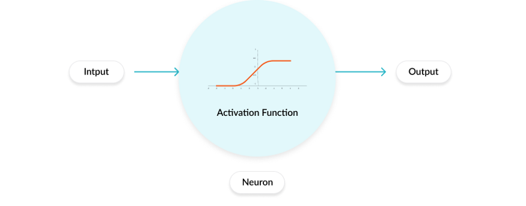
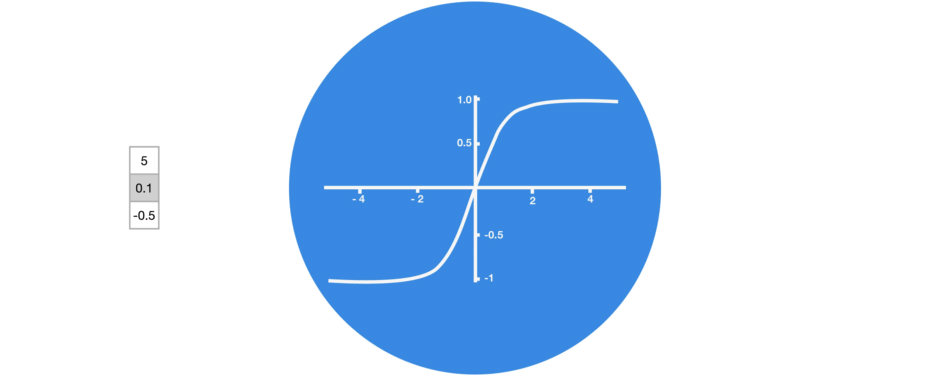
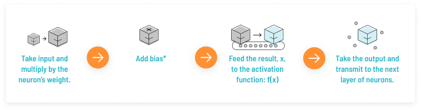
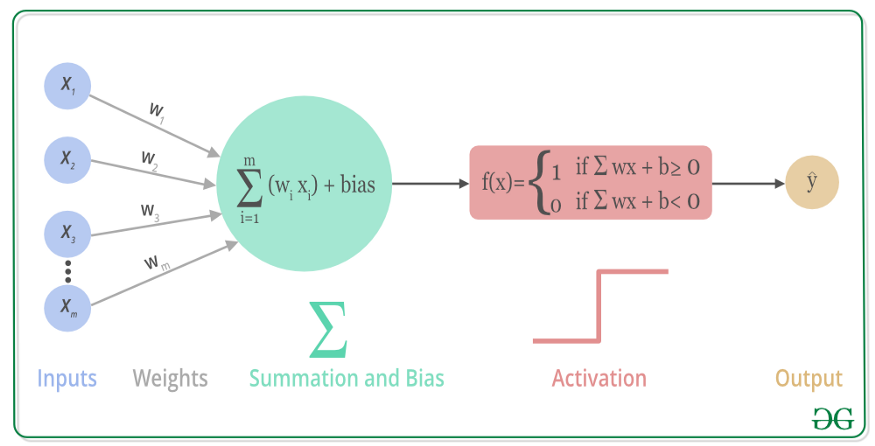
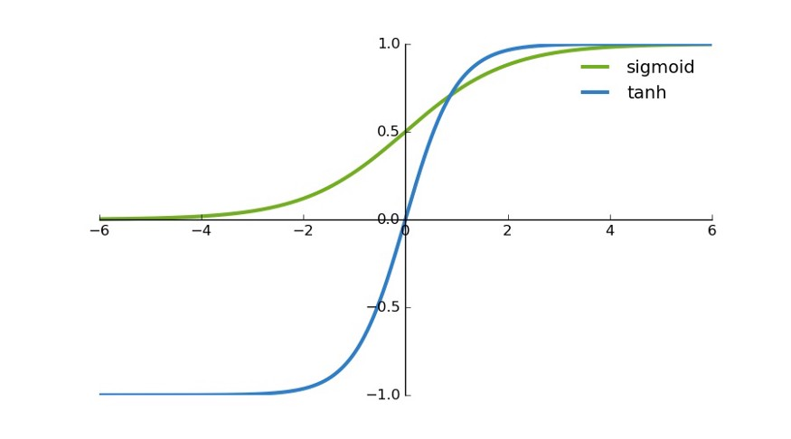
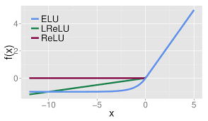
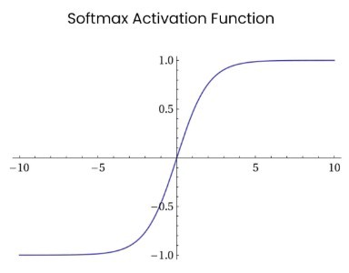
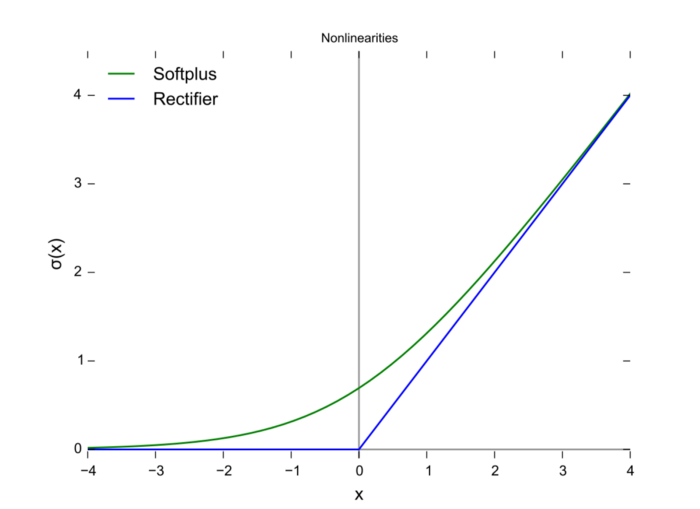
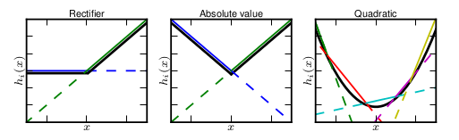
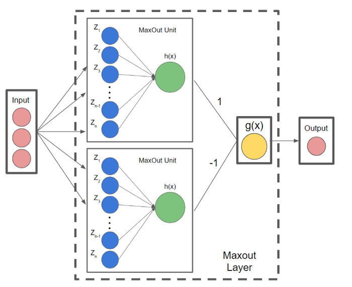

激活函数#
激活函数（Activation Function）的主要作用是提供网络的非线性建模能力。如果没有激活函数，那么该网络仅能够表达线性映射，此时即便有再多的隐藏层，其整个网络跟单层神经网络也是等价的。因此也可以认为，只有加入了激活函数之后，深度神经网络才具备了分层的非线性映射学习能力。
动画效果如下
激活函数有什么用？
引入非线性因素。
人工神经元的工作原理#
在人工神经网络中，一个节点的激活函数定义了该节点在给定的输入或输入集合下的输出。标准的计算机芯片电路可以看作是根据输入得到开（1）或关（0）输出的数字电路激活函数。因此，激活函数是确定神经网络输出的数学方程式，本文概述了深度学习中常见的十种激活函数及其优缺点。
首先我们来了解一下人工神经元的工作原理，大致如下：
上述过程的数学可视化过程如下图所示：
Sigmoid#
逐元素应用Sigmoid函数对数据进行激活，将元素归一化到区间\((0,1)\)内

import torch
m = torch.nn.Sigmoid()
input = torch.randn(2)
print(input)
output = m(input)
print(output)
tensor([0.5145, 0.3895])
tensor([0.6259, 0.5962])
Tanh#
逐元素应用双曲正切激活函数对数据进行激活，将元素归一化到区间\((-1,1)\)内

tanh 是一个双曲正切函数。tanh 函数和 sigmoid 函数的曲线相对相似。但是它比 sigmoid 函数更有一些优势。
首先，当输入较大或较小时，输出几乎是平滑的并且梯度较小，这不利于权重更新。二者的区别在于输出间隔，tanh 的输出间隔为 1，并且整个函数以 0 为中心，比 sigmoid 函数更好；
在 tanh 图中，负输入将被强映射为负，而零输入被映射为接近零。
注意：在一般的二元分类问题中，tanh 函数用于隐藏层，而 sigmoid 函数用于输出层，但这并不是固定的，需要根据特定问题进行调整。
import torch
m = torch.nn.Tanh()
input = torch.randn(2)
print(input)
output = m(input)
print(output)
tensor([-0.1121, -0.0327])
tensor([-0.1117, -0.0327])
ReLU#
逐元素应用ReLU函数对数据进行激活，将元素归一化到区间\((0,x)\)内
torch.nn.ReLU(inplace=False)
参数：
inplace：是否改变输入数据，如果设置为
True，则会直接修改输入数据；如果设置为False，则不对输入数据做修改
相比于 sigmoid 函数和 tanh 函数，它具有如下优点：
当输入为正时，不存在梯度饱和问题。
计算速度快得多。ReLU 函数中只存在线性关系，因此它的计算速度比 sigmoid 和 tanh 更快。
当然，它也有缺点：
Dead ReLU 问题。当输入为负时，ReLU 完全失效，在正向传播过程中，这不是问题。有些区域很敏感，有些则不敏感。但是在反向传播过程中，如果输入负数，则梯度将完全为零，sigmoid 函数和 tanh 函数也具有相同的问题；
from torch import nn
import torch
a = torch.randn(10)
relu = nn.ReLU()
b = relu(a)
print("经过relu之前")
print(a)
print("经过relu之后")
print(b)
经过relu之前
tensor([ 0.3210, -0.4570, 1.3314, 1.2131, -0.4050, -1.5871, -1.2175, 0.5114,
-0.4429, -0.9827])
经过relu之后
tensor([0.3210, 0.0000, 1.3314, 1.2131, 0.0000, 0.0000, 0.0000, 0.5114, 0.0000,
0.0000])
c = torch.randn(10)
print("经过relu之前c的值")
print(c)
relu = nn.ReLU(inplace=True)
d = relu(c)
print("经过relu之后c的值")
print(c)
print("经过relu之后d的值")
print(d)
经过relu之前c的值
tensor([-0.8008, -0.1903, -0.8372, -0.9316, 0.5388, -0.3238, -0.1250, -0.7018,
-0.7510, 0.8649])
经过relu之后c的值
tensor([0.0000, 0.0000, 0.0000, 0.0000, 0.5388, 0.0000, 0.0000, 0.0000, 0.0000,
0.8649])
经过relu之后d的值
tensor([0.0000, 0.0000, 0.0000, 0.0000, 0.5388, 0.0000, 0.0000, 0.0000, 0.0000,
0.8649])
Leaky ReLU#
区间范围：
如果是正数或者0那么为：\(x\)
如果是负数那么为：\(negative\_slope*x\)
torch.nn.LeakyReLU(negative_slope=0.01, inplace=False)
参数：
negative_slope：控制负斜率的角度（用于负输入值）。默认值：\(1e-2\)
inplace：可以选择就地执行操作（直接修改传入值）
或者

它是一种专门设计用于解决 Dead ReLU 问题的激活函数
注意：从理论上讲，Leaky ReLU 具有 ReLU 的所有优点，而且 Dead ReLU 不会有任何问题，但在实际操作中，尚未完全证明 Leaky ReLU 总是比 ReLU 更好。
import torch
m = torch.nn.LeakyReLU(0.1)
print(input)
output = m(input)
print(output)
tensor([-0.1121, -0.0327])
tensor([-0.0112, -0.0033])
ELU#
区间范围：
如果是正数那么为：\(x\)
如果是负数或者0那么为：\(\alpha *(\exp (x)-1)\)
torch.nn.ELU(alpha=1.0, inplace=False)
参数：
alpha：公式中的\(\alpha\)值，默认为：1
inplace：可以选择就地执行操作（直接修改传入值）

import torch
m = torch.nn.ELU()
print(input)
output = m(input)
print(output)
tensor([-0.1121, -0.0327])
tensor([-0.1061, -0.0322])
ELU vs Leaky ReLU vs ReLU
ELU 的提出也解决了 ReLU 的问题。与 ReLU 相比，ELU 有负值，这会使激活的平均值接近零。均值激活接近于零可以使学习更快，因为它们使梯度更接近自然梯度。
PReLU（Parametric ReLU）#
区间范围：
如果是正数或者0那么为：\(x\)
如果是负数那么为：\(\alpha *x\)
torch.nn.PReLU(num_parameters=1, init=0.25, device=None, dtype=None)
参数：
num_parameters：参数\(\alpha\)，该参数可学习
init：\(\alpha\)初始值，默认0.25
或者
import torch
m = torch.nn.PReLU()
print(input)
output = m(input)
print(output)
tensor([-0.1121, -0.0327])
tensor([-0.0280, -0.0082], grad_fn=<PreluKernelBackward0>)
Softmax#
Softmax 是用于多类分类问题的激活函数，在多类分类问题中，超过两个类标签则需要类成员关系。对于长度为 K 的任意实向量，Softmax 可以将其压缩为长度为 K，值在（0，1）范围内，并且向量中元素的总和为 1 的实向量。
import torch
m = torch.nn.Softmax(dim=1)
input = torch.randn(2, 3)
print(input)
output = m(input)
print(output)
tensor([[ 0.3733, -0.3392, 0.5787],
[-1.2227, -0.1623, 1.6221]])
tensor([[0.3679, 0.1804, 0.4517],
[0.0474, 0.1369, 0.8156]])
Swish#
实则就是用Sigmoid激活函数再乘上输入
SiLU 函数也称为 Swish 函数。
torch.nn.SiLU(inplace=False)
import torch
m = torch.nn.SiLU()
input = torch.randn(2, 3)
print(input)
output = m(input)
print(output)
tensor([[ 2.3705, -2.4336, 0.7870],
[-0.6411, 1.5955, -1.0040]])
tensor([[ 2.1679, -0.1963, 0.5408],
[-0.2212, 1.3265, -0.2692]])
Softplus#
torch.nn.Softplus(beta=1.0, threshold=20.0)
参数：
beta：公式中\(\beta\)的值，默认为1
threshold：阈值，高于这个的值将会恢复为线性函数，默认为20
import torch
m = torch.nn.Softplus()
input = torch.randn(2, 3)
print(input)
output = m(input)
print(output)
tensor([[ 0.4554, -0.3195, 0.4984],
[ 0.0214, -0.1440, -1.7534]])
tensor([[0.9465, 0.5461, 0.9731],
[0.7039, 0.6237, 0.1597]])
可以看到Softplus是Relu的平滑版本
Maxout#
Maxout可以看做是在深度学习网络中加入一层激活函数层，包含一个参数\(k\)。这一层相比ReLU、sigmoid等，其特殊之处在于增加了\(k\)个神经元，然后输出激活值最大的值
我们常见的隐含层节点输出:
而在Maxout网络中，其隐含层节点的输出表达式为:
其中\(z_{i j}=x^{T} W_{\ldots i j}+b_{i j}, W \in R^{d \times m \times k}\)
与常规激活函数不同的是,它是一个可学习的分段线性函数.
然而任何一个凸函数，都可以由线性分段函数进行逼近近似。其实我们可以把以前所学到的激活函数：ReLU、abs激活函数，看成是分成两段的线性函数，如下示意图所示：
下图为详细的流程
